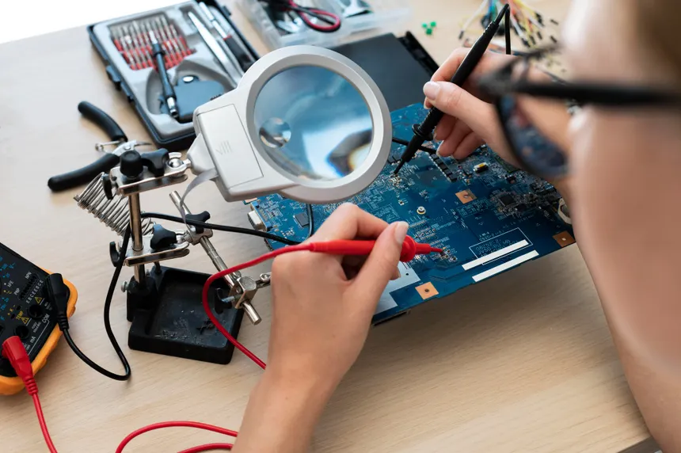

Reparación y mantenimiento
Ofrecemos un servicio de reparación y mantenimiento para consolas, tanto retro como actuales. Nuestro equipo de expertos se asegura de que tu consola esté en perfecto estado para que puedas disfrutar de tus juegos favoritos sin problemas.